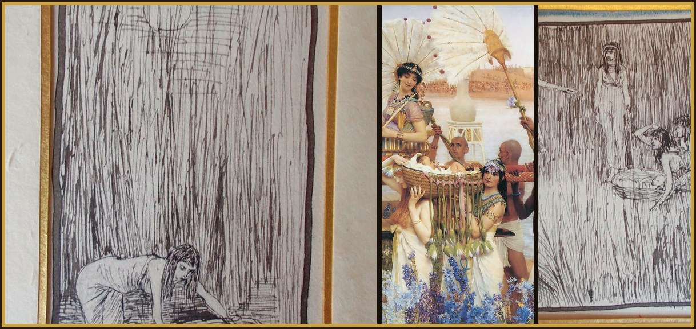
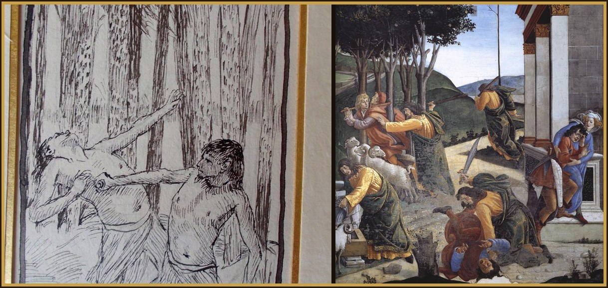
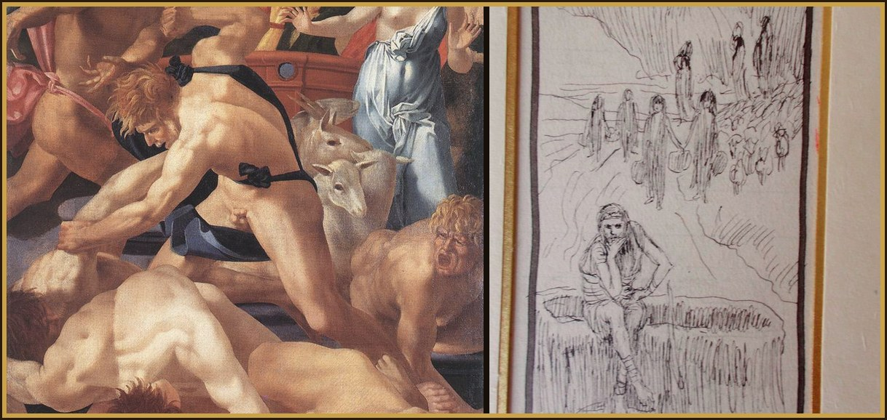

Intention the favor I place in your hands
1After these things, a man from the house of Levi went out, and he took a wife from his own stock. 2And she conceived and bore a son. And seeing him to be handsome, she hid him for three months. 3And when she was no longer able to hide him, she took a small basket woven of bulrushes, and she smeared it with pitch as well as tar. And she placed the little infant inside, and she laid him in the sedges by the bank of the river. 4His sister was standing at a distance and was wondering what would happen. 5Then, behold, the daughter of Pharaoh descended to wash in the river. And her maids walked along the edge of the cove. And when she had seen the small basket among the papyruses, she sent one of her servants for it. And when it was brought, 6she opened it; and realizing that within it was a little one crying, she took pity on him, and she said: “This is one of the infants of the Hebrews.” 7And the sister of the boy said to her: “If you wish, I will go and call to you a Hebrew woman, who will be able nurse the infant.” 8She responded, “Go.” The maid went directly and called her mother. 9And the daughter of Pharaoh said to her: “Take this boy and nurse him for me. I will give you your wages.” The woman took and nursed the boy. And when he was mature, she delivered him to the daughter of Pharaoh. 10And she adopted him in place of a son, and she called his name Moses, saying, “Because I took him from the water.”

_for_Brunoff_096_Mo%C3%AFse_expos%C3%A9_parmi_les_roseaux.jpg){kind=link}

_for_Brunoff_098_La_fille_de_Pharaon_acueille_la_vraie_m%C3%A8re_de_Mo%C3%AFse.jpg){kind=link}
11In those days, after Moses had grown up, he went out to his brothers. And he saw their affliction and an Egyptian man striking a certain one of the Hebrews, his brothers. 12And when he had looked around this way and that, and had seen no one nearby, he struck down the Egyptian and hid him in the sand. 13And going out the next day, he spotted two Hebrews quarrelling violently. And he said to him who was causing the injury, “Why do you strike your neighbor?” 14But he responded: “Who appointed you as leader and judge over us? Do you want to kill me, just as yesterday you killed the Egyptian?” Moses was afraid, and he said, “How has this word become known?” 15And Pharaoh heard this talk, and he sought to kill Moses. But fleeing from his sight, he stayed in the land of Midian, and he sat down next to a well.

_for_Brunoff_099_Mo%C3%AFse_tue_un_%C3%89gyptien.jpg){kind=link}
_-_WGA2746.jpg){kind=link}
16Now there was a priest of Midian with seven daughters, who came to draw water. And having filled the troughs, they desired to water their father’s flocks. 17The shepherds overcame them and drove them away. And Moses rose up, and defending the girls, he watered their sheep. 18And when they had returned to their father, Reuel, he said to them, “Why have you arrived sooner than usual?” 19They responded: “A man of Egypt freed us from the hands of the shepherds. Moreover, he also drew water with us and gave the sheep to drink.” 20But he said: “Where is he? Why have you dismissed the man? Call him, so that he may eat bread.” 21Therefore, Moses swore that he would live with him. And he accepted his daughter Zipporah as a wife. 22And she bore a son to him, whom he called Gershom, saying, “I have been a newcomer in a foreign land.” In truth, she bore another, whom he called Eliezer, saying, “For the God of my father, my helper, has rescued me from the hand of Pharaoh.”


_for_Brunoff_100_Mo%C3%AFse_%C3%A0_la_fontaine.jpg){kind=link}
23In truth, after a long time, the king of Egypt was dead. And the sons of Israel, groaning, cried out because of the works. And their cry ascended to God from the works. 24And he heard their groaning, and he also remembered the covenant which he formed with Abraham, Isaac, and Jacob. 25And the Lord looked with favor on the sons of Israel, and he knew them.
A Levite mother hides her son, then lays him in a basket among the sedges. Pharaoh’s daughter draws him out and names him Moses, “because I took him from the water.” He grows up, kills an Egyptian, and is asked, “Who appointed you as leader and judge over us?” He flees, and names his son Gershom: a newcomer in a foreign land. After a long time the king dies. Israel groans, and God hears, and remembers Abraham, Isaac, and Jacob.
- Where have you tried to force the rescue, and been told you were not appointed?
- What cry — yours, or someone else’s — are you treating as unheard because the answer has not arrived?
The First Sorrowful Mystery - The Agony
Fruit: Uniformity With the Will of God · Matthew 26:36
O Most Sorrowful Mother Mary,
meditating on the Mystery of the Agony of Our Lord in the Garden, when, in the grotto of the Garden of Olives, Jesus saw the sins of the world unfolded before Him by Satan, who sought to dissuade Him from the sacrifice He was about to make; when, His soul shrinking from the sight, and His precious blood flowing from every pore at the vision of the torture and death He was to undergo, your own sufferings, dear Mother, the future sufferings of His Church, and His own sufferings in the Blessed Sacrament, He cried in anguish, “Abba! Father! If it be possible, let this chalice pass from Me!”; but, immediately resigning Himself to His Father’s will, He prayed, “Not as I will, but as Thou wilt!”
The Second Sorrowful Mystery - The Scourging at the Pillar
Fruit: Mortifying My Senses · John 19:1
O Most Sorrowful Mother Mary,
meditating on the Mystery of the Scourging of Our Lord when, at Pilate’s command, your divine Son, stripped and bound to a pillar, was lacerated from head to foot with cruel scourges and His flesh torn away until His mortified body could bear no more,
The Third Sorrowful Mystery - The Crowning With Thorns
Fruit: Courage in Tough Trials · Matthew 27:27
O Most Sorrowful Mother Mary,
meditating on the Mystery of the Crowning of Our Lord with thorns, when, the soldiers, binding about His head a crown of sharp thorns, showered blows upon it, driving the thorns deeply into His head; then, in mock adoration, knelt before Him, crying, “Hail, King of the Jews!”
The Fourth Sorrowful Mystery - The Carrying of the Cross
Fruit: Patience in Adversity · Luke 23:26
O Most Sorrowful Mother Mary,
meditating on the Mystery of the Carrying of the Cross, when, with the heavy wood of the Cross upon His shoulders, your divine Son was dragged, weak and suffering, yet patient, through the streets, amidst the revilements of the people, to Calvary; falling often, but urged along by the cruel blows of His executioners,
The Fifth Sorrowful Mystery - The Crucifixion
Fruit: Forgiveness · John 19:25
O Most Sorrowful Mother Mary,
meditating on the Mystery of the Crucifixion, when your divine Son was nailed to the cross, upon which He died after three hours of indescribable agony, during which time He begged His Father forgiveness of His enemies,
The Thanksgiving Prayer
Hail! Queen of the Most Holy Rosary, my Mother Mary, hail! At your feet I humbly pray and offer you a crown of blood-red roses, in remembrance of the passion of your divine Son. Each ten bound together, recalling to you a sorrowful mystery, with my petition for a particular grace. O Holy Queen, dispenser of God’s graces and mother of all who invoke your holy name. Do not look upon my gift and fail to see its binding. As you graciously receive my gift, I kindly implore you to receive my thanksgiving; from your bounty you have granted me the favor I so trustingly sought. I despaired not of what I ask of thee, and thou has truly shown thyself my Mother!
Prayer in Thanksgiving
Sweet Mother Mary, I offer you this Spiritual Communion to bind my bouquets in a wreath to place upon your brow in thanksgiving for the favor I place in your hands.
Day 2
Surrender to me does not mean to fret, to be upset, or to lose hope, nor does it mean offering to me a worried prayer asking me to follow you and change your worry into prayer. It is against this surrender, deeply against it, to worry, to be nervous and to desire to think about the consequences of anything. It is like the confusion that children feel when they ask their mother to see to their needs, and then try to take care of those needs for themselves so that their childlike efforts get in their mother’s way. Surrender means to placidly close the eyes of the soul, to turn away from thoughts of tribulation and to put yourself in my care, so that only I act, saying, “You take care of it.”
Ten times
O Jesus, I surrender myself to you, take care of everything!
To Our Lady
Mother, I am yours now and forever. Through you and with you I always want to belong completely to Jesus.